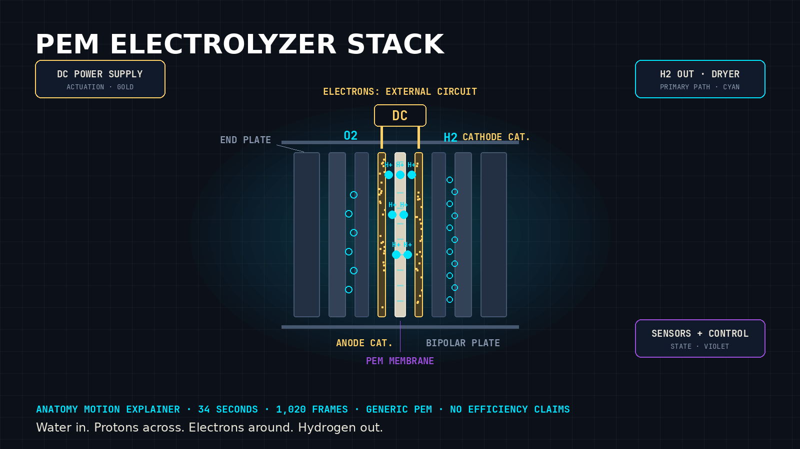

← Back to the interactive explainer

A PEM Electrolyzer Stack, Explained in 34 Seconds
Water in. Protons across. Electrons around. Hydrogen out.
By Mirza Causevic, Kinetic Gain LLC
Suggested Medium tags: Hydrogen Energy, Electrolyzer, Clean Energy, Engineering, Energy Transition
SEO title: PEM Electrolyzer Stack Explained: MEA, Water Feed, Gas Evolution, Cooling, and Balance of Plant
Meta description: How a generic PEM electrolyzer stack works, in 34 seconds and 1,020 code-rendered frames. The MEA, water feed, proton and electron paths, gas evolution, cooling, and the balance of plant that makes a cell reaction into a system. No efficiency claims. No invented specs.
Most explanations of a proton exchange membrane (PEM) electrolyzer start with the chemistry and lose the hardware. The chemistry fits in two lines. The hardware is the part that decides whether those two lines ever run outside a textbook.
So I built the explanation the other way around. Hardware first, chemistry at the exact moment the hardware makes it possible, then the systems that keep it alive. It runs 34 seconds. It is rendered entirely in code, frame by frame, and you can scrub every one of its 1,020 frames.
Watch and scrub the live explainer: https://mizcausevic-dev.github.io/pem-electrolyzer-stack-explainer/
Source code: https://github.com/mizcausevic-dev/pem-electrolyzer-stack-explainer
What follows is the full written version. Same five chapters, same order, same causal chain.
The one idea the whole machine hangs on
A PEM electrolyzer is a sorting machine. It takes water apart and keeps the pieces separated while it does so.
The membrane at the center does the sorting. It passes protons. It blocks gases and, for practical purposes in this explanation, it blocks electrons. Everything else in the stack exists to serve that one selective barrier: feed it water on the correct side, give electrons a different road to travel, collect the gases on opposite sides, and take the heat away.
Hold onto that sentence and the rest is plumbing, power, and heat management arranged around it.
Chapter 1, frames 0 to 149: The MEA and the plates
The explainer opens on a sectional view of a generic cell stack. Sectional, not exploded, because real stacks do not fly apart into floating layers. The layers separate just far enough to name them.
From outside in, on each side:
- End plate. Part of the compression system. Tie rods pull the stack together so layers stay in contact under pressure.
- Bipolar plate. One plate serves two cells. It carries a flow field that distributes fluid across the cell face, conducts electrons to the next cell, and separates the fluids of adjacent cells.
- Porous transport layer (PTL). A porous conductor. Water and gas move through it. Electrons move through it. It also spreads current evenly against the catalyst layer.
- Catalyst layer. Where the half-reactions happen. Anode side and cathode side use different catalyst formulations because they run different reactions.
- PEM membrane. The center. A hydrated polymer that conducts protons and separates the two gas spaces.
Layers 2 through 4, mirrored around the membrane, form the membrane electrode assembly's working neighborhood. Repeat that cell dozens of times, clamp it between end plates, and you have a stack.
Two things in this chapter matter for everything after it. First, the stack is a repeating unit, not a single device. What is true for one cell must stay true for every cell, or the weak cell limits the rest. Second, compression is not assembly trivia. Contact between layers is part of the electrical path and part of the sealing system. The gold compression arrows in the animation are labeled actuation for a reason. Force is an input to this machine, not a byproduct.
Chapter 2, frames 150 to 299: Water feed
The camera tracks left, along the inlet path, because the next event in the causal chain is delivery.
Deionized water is pumped to the anode side of the cells. A manifold distributes it so each cell receives feed. That distribution detail is where stack diagrams usually get vague, and where real stacks earn their engineering. Feed the first cell generously and the last cell poorly, and you do not have one stack with slightly uneven flow. You have cells running different local conditions under one nameplate.
The animation labels this chapter as time compression. Real distribution happens continuously and invisibly inside sealed channels. The moving dashes are a schematic for direction and destination, not a picture of individual water molecules. That label stays on screen for the whole chapter. An explainer that hides its time and scale choices teaches the wrong lesson with high production value.
No water at the anode, no reaction. That is the causal handoff to chapter 3.
Chapter 3, frames 300 to 509: Gas evolution
Now the camera dives. The scale changes from plate level to the membrane interface, and the explainer says so on screen: scale change, slow motion, bubble size exaggerated. This is the one chapter where a labeled schematic replaces any pretense of direct observation. Nobody films protons. The honest move is to draw the mechanism as a diagram and label it as one.
At the anode catalyst, water splits:
2H2O → O2 + 4H+ + 4e−
Oxygen leaves with the anode water stream. The four protons cross the hydrated membrane, shown as cyan markers moving through the membrane in the animation. The four electrons do not cross. They travel the external circuit, shown in gold, through the load path created by the DC power supply.
At the cathode catalyst:
4H+ + 4e− → 2H2
Hydrogen leaves on the cathode side.
Add the two half-reactions and the bookkeeping closes. Two water molecules in. Two hydrogen molecules and one oxygen molecule out. The animation draws roughly twice as many cathode bubbles as anode bubbles because the equations say 2 to 1 by moles. That ratio is not decoration. It is stoichiometry made visible.
Notice what the membrane bought. Because protons and gases take different paths, hydrogen and oxygen are born already separated. The plant still needs separation equipment, covered in chapter 5, because each gas leaves mixed with liquid water. But the gases were never mixed with each other. That is the membrane's whole value proposition, stated without a single efficiency number.
Chapter 4, frames 510 to 749: Cooling
Run the reaction and heat arrives as a byproduct. Part of the electrical input leaves as chemical energy in hydrogen. The rest becomes heat in the stack. That sentence is as far as this article goes on energy accounting, deliberately. This is a generic explainer. It makes no efficiency claims, and any version of this content that quotes one for a "generic PEM" should be corrected on sight.
The hardware answer is a cooling loop. Coolant channels, integrated into or routed alongside the plates, carry heat out of the stack to an external heat exchanger. The explainer pulls the camera back up from the membrane to plate scale for this, because cooling is a plate and plant problem, not a catalyst problem.
The violet elements appear here: temperature sensors. Their job is control, not display. Sensor readings adjust coolant flow so the stack holds its intended temperature range. The rising temperature trace in the animation is explicitly labeled schematic, with no measured data. It shows the shape of a control problem (warm-up, approach to setpoint, regulation) and invents no numbers for it.
Why this matters beyond comfort: membrane hydration, seal life, and catalyst durability all depend on temperature behavior over time. A stack that cannot shed heat does not merely run warm. It ages on a different, faster curve. Cooling is lifetime engineering disguised as plumbing.
Chapter 5, frames 750 to 1019: Balance of plant
The final pull-back is the widest shot in the piece, and the one most electrolyzer explainers skip. The stack sits in the center. Around it, the balance of plant (BOP):
- DC power supply. Converts incoming AC to the controlled DC the stack consumes. Gold in the animation, because this is actuation and energy.
- Water skid. Storage, deionization polishing, and pumping. The feed from chapter 2 starts here.
- Gas-liquid separators. Both outlets carry gas plus liquid. Hydrogen goes on to drying before it is a product. Oxygen is commonly vented, with water recovered where the design calls for it.
- Cooling loop. Radiator or heat exchanger rejecting stack heat to the environment.
- Controller and sensors. Violet throughout. Pressures, temperatures, liquid levels, and cell monitoring feeding decisions: ramp, hold, alarm, shut down.
The BOP is what turns a correct cell reaction into a system that can start without a specialist present, protect itself when a sensor reports a real problem, and shut down cleanly. When buyers compare electrolyzer systems, they often compare stacks on the slide and BOP in the field. The field is where the comparison actually happens.
The animation ends where it should: holding still. All loops running at once, nothing exploding outward, no confetti particles. A complete system, in a stable view, for the last frames. That restraint is a technical position. Systems that work look boring from outside.
What the explainer refuses to do, and why that is the point
Three refusals are built into this piece, and they are worth naming because they generalize to any technical animation work.
No invented specifications. No cell voltage presented as typical. No production rate. No efficiency figure. A generic PEM stack does not have a defensible single number for any of those, so the explainer shows mechanism and omits metrics. Representative numbers belong to specific, named, cited products.
No unlabeled scale or time tricks. Every chapter carries its distortion on screen: schematic section, time compression, slow motion, scale change, schematic trace. Viewers forgive simplification. They should not forgive hidden simplification.
No decorative physics. Particles exist in exactly one place, the gas evolution chapter, where bubbles carry the 2 to 1 stoichiometric ratio. Elsewhere, motion means flow, heat, or electron travel. If a moving pixel does not map to a physical claim, it does not ship.
How it was built, briefly
The renderer is a pure function of frame number. Give it frame 812 and it draws frame 812, identically, on any machine. Seeded hashes replace random number generation wherever visual variation is needed. The camera follows eased keyframes, one deliberate move per chapter, tied to the causal chain: push in for hardware, track left for feed, dive for the membrane, rise for cooling, pull back for the plant.
That determinism is not an aesthetic preference. It is what makes the piece reviewable. An engineer can cite a frame number the way they would cite a figure in a paper. A teacher can deep-link an exact moment with a URL parameter. A reviewer can export any frame as a PNG and mark it up. Animation that can be cited frame by frame behaves like documentation. Animation that cannot behaves like advertising.
The stack itself repurposes. The same timeline engine, chapter data swapped, covers a fuel cell running in reverse, a redox flow battery, or any layered electrochemical device. The colors keep their jobs across subjects: cyan for the primary pathway, gold for actuation and energy, violet for sensing and state. A reader who learns the legend once can read the next explainer without relearning the visual language. That is the actual product underneath the hydrogen subject: a repeatable, honest format for mechanism-first technical explainers.
The short version, for the feed
- A PEM electrolyzer is a sorting machine. The membrane passes protons and blocks gases and electrons.
- Water feeds the anode. Protons cross. Electrons take the external circuit. Hydrogen forms at the cathode, oxygen at the anode, born separated.
- The bubble ratio is 2 to 1 because the half-reactions say so.
- Heat is a lifetime problem. Cooling and temperature control decide how fast the stack ages.
- The stack is the middle of the product. The balance of plant decides whether it runs unattended.
- Any explainer showing you numbers for a "generic" stack is selling something. Ask for the named product and the citation.
Reference and review status
Process and architecture reference: U.S. Department of Energy, Hydrogen Production and Electrolysis overview, https://www.energy.gov/eere/fuelcells/hydrogen-production
Camera moves, palette, cutaways, and timing in the animation are original illustrative direction, not experimentally validated observations. This article and the explainer it describes are working educational material, not a certified engineering reference and not a claim about any specific commercial implementation. Verify subject-specific details before publication or procurement use.
If you build technical explainers, hydrogen systems, or the documentation around either, this format is available as a productized engagement through Kinetic Gain LLC. If you review hydrogen content for a living and find an error in a specific frame, cite the frame number. That is what it is for.
Kinetic Gain LLC builds mechanism-first technical explainers, directories, and B2B web platforms. kineticgain.com